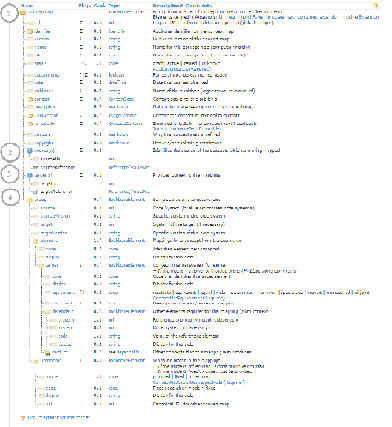

ConceptMap tutorial
ConceptMap is a special type of a FHIR resource that allows you to establish a one-way relationship between any two things - classes in class models, data elements, or code systems. We'll use latter as an example in this tutorial to demonstrate how two concepts can be related (mapped) to each other and how their equivalence (or lack of) can be specified.
Contents
Step 1: About ConceptMap Step 2: Sample data mapping Step 3: Sample resources Step 4: Advanced features Step 5: $translate operationStep 1: About ConceptMap
The ConceptMap resource in general has four parts to it: 1) metadata about the resource, 2) the source of the data, 3) target the data is mapped to, and 4) the individual mappings themselves:
{kind=link}
Metadata about the resource describes general information about the mapping - who made it, what version is it at, copyright on the content and so on.
Source of the data is a reference, or the entire definition inline of the dataset that you are mapping from. Remember that ConceptMap is a one-way mapping - so there's always a clear source and a target.
Target of the data is similar to source - it is either a reference to the dataset or its inline definition.
Finally comes the meat of the matter - the mappings themselves. Each mapping (called as 'element' in the data) can have one or more target elements, which specify a connection between a code from one valueset to code(s) in another valueset. The type of connection is described by the mandatory equivalence property - the connection could say that the two elements are exactly the same, one concept encompasses more (or less) meaning than the other, or the two concepts aren't related at all even. The full list of equivalence values is available in the ConceptMap Equivalence valueset.
Step 2: Sample data mapping
As an example, let's say you have a (very poorly designed) valueset from the codesystem representing employee presence at work with just three codes: present, not-present, and sick that is in use by your system. You start importing data from a new system which has finer granularity:
| Current valueset | New system's valueset |
|---|---|
| present | in-office |
| not-present | away-travelling |
| sick | working-from-home |
| annual-leave | |
| personal-leave | |
| jury-duty |
Thus, you need to create a FHIR map connecting new codes you're getting to ones you already have, making use of the available equivalence values. You come up with this sample mapping that maps in the direction from the new system to the current valueset:
| New system's valueset | Current valueset | Equivalence code |
|---|---|---|
| in-office | present | equal |
| away-travelling | not-present | wider |
| working-from-home | not-present | wider |
| annual-leave | not-present | wider |
| personal-leave | sick | equal |
| jury-duty | not-present | wider |
| away-travelling | present | disjoint |
Step 3: Sample resources
A sample ConceptMap resource containing these mappings is available here. The supporting CodeSystem, old ValueSet and new ValueSet are available as well.
Step 4: Advanced features
ConceptMap is actually pretty powerful, and besides the basic code-to-code mapping described above, it also supports the following usecases:
- Mapping one code to many codes at once given the same equivalence property (by utilising multiple target properties within one element property)
- Having a dependency for a mapping - a mapping could only be applicable if a selected element exists in the data and has the specified value (see dependsOn)
Step 5: $translate operation
The $translate operation allows you to utilise a FHIR terminology server to get an equivalent code as specified by a ConceptMap mapping. To use it, you need to provide the conceptmap you'd like to use, the input code and its codesystem, and the valueset you'd like to get a translation from. Try uploading all four sample resources mentioned above (a codesystem, two valuesets, and a conceptmap) via Postman to a FHIR terminology server (e.g., http://ontoserver.csiro.au/stu3/) and use the translate operation with this template:
http://my-terminology-server.org/fhir/ConceptMap/servers-conceptmap-id/$translate?code=my-code&system=codes-codesystem&target=target-valueset
Here's a sample code you could try, once you've uploaded your conceptmap to a terminology server of choice:
http://ontoserver.csiro.au/stu3/ConceptMap/servers-conceptmap-id/$translate?code=in-office&system=urn:uuid:bb6efb79-2b93-4569-a51e-6fcf103b6e9a&target=4a211242-088a-4c33-a189-77d71c7f81e2
That's it! You're done for now.